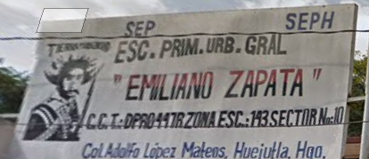

BREVE HISTORIA DE NUESTRA ESCUELA
La Escuela Primaria Emiliazno Zapata Clave ES:CCT,13DPR0447R1 de Huejutla Hgo., se fundo el 5 de septiembre de 1979, siendo gobernador del estado el lic. Jorge Rojo Lugo; como Presidente Municipal el Profr. Jesús Nochebuena Lara; delegado de la S.E.P. el Arq. Adrián Cordero García, y jefe del Departamento de Escuelas Primarias Generales el Profr. Manuel López Zamudio.
A principios de marzo de 1981 el departamento de escuelas Primarias informó, que se había logrado la autorización para construir un edificio propio, a los pocos días se recibió la visita de un enviado especial de C.A.P.F.C.E. quién confirmaría dicha autorización, informando a su vez que se requería de un terreno de 15,000 m2 para la construcción, ya que esta escuela tenía un proyecto de doble turno, ante esto se integró un patronato con personas reconocidas por su interés y participación, vecinos de barrio arriba, entre ellos los C. Enrique Espinoza, Jerónimo Charnichart Solís, Gervasio Gómez, Edilberto Carrillo, Rosalino Zerón Amador, Juan García Torres, Raymundo Reyes Montaño, Juventino Reyes Monterrubio y varias personas más que participaron activamente.
Afortunadamente el patronato y el Sr. Castro convinieron en hacer la operación de compra-venta fijándose la cantidad de $ 600,000.00 (seiscientos mil pesos 00/100 m. N.) Como valor del terreno. Ante este compromiso la planta de maestro determinó que habría de realizar una actividad que consistió en la rifa de un automóvil Volkswagen modelo 1981 color rojo, cuyas utilidades permitieron adquirir el predio mencionado. Al año siguiente se rifo una camioneta datsun modelo 1982, y en 1984 otro Volkswagen.
Una vez adquirido el terreno con las características establecidas, se informo al C.A.P.F.C.E. y a las autoridades de la sep, iniciándose la construcción en enero de 1982 con 6 aulas, 1 taller y un modulo de baños Con esta primera etapa concluida, en agosto de 1982 esta institución se ubico en su actual domicilio colonia adolfolopez mateos antes mejor conocido como papalotes, donde hasta le fecha se presta el servicio a los jóvenes que desean cursar la educación primaria, ofreciendo instalaciones completas.
Debemos ser justos y reconocer a las autoridades municipales, que desde 1981 a la fecha han apoyado a esta institución, a los padres de familia de las ya casi 29 generaciones de jóvenes egresados, que hoy se han integrado al avance de la ciencia y de la tecnología, ya que muchos de ellos hoy son profesionistas universitarios que de alguna manera son el orgullo de esta casa de estudios.